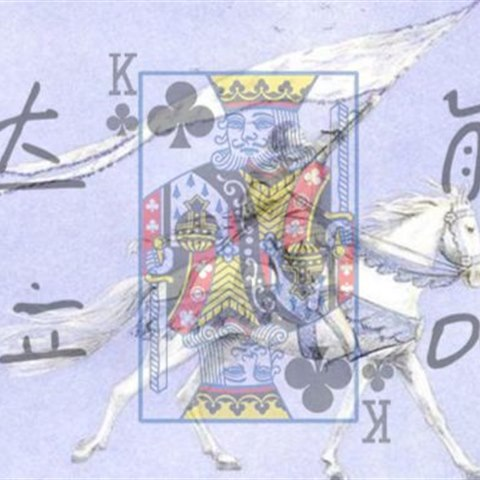
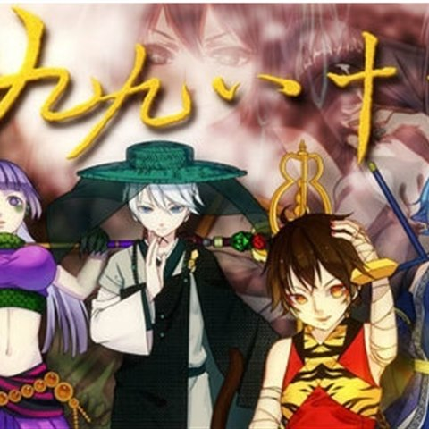

01权御天下
原曲：没有龟壳的乌龟
气势磅礴的古风原创曲，洛天依最具代表性的作品之一。 唱腔凌厉、编曲层层加压，把权谋与战场的画面感推到了极致， 也是很多人第一次意识到「虚拟歌手可以这么有力量」的歌。
B站观看那些让洛天依被记住的歌
本页曲绘与视频链接均来自哔哩哔哩对应作品页， 版权归各原曲作者与曲绘作者所有，本站仅作非商业性的展示与指路。 每张卡片下方标注了原曲投稿账号，点击按钮可跳转到 B 站原视频。
原曲：没有龟壳的乌龟
气势磅礴的古风原创曲，洛天依最具代表性的作品之一。 唱腔凌厉、编曲层层加压，把权谋与战场的画面感推到了极致， 也是很多人第一次意识到「虚拟歌手可以这么有力量」的歌。
B站观看原曲：ilem（洛天依 & 言和）
旋律洗脑、节奏明快的合唱曲，出圈程度在中文 Vocaloid 里数一数二。 歌词写的是再普通不过的日常，却因为那股轻快的劲儿， 成了很多人循环播放的那一首。
B站观看
原曲：ilem（洛天依 & 言和）
密集的绕口令式歌词配上欢快曲风，反差感极强。 全曲几乎没有冷场，副歌那段长长的名字更是被反复玩梗， 是中文 Vocaloid 传播度最高的作品之一。
B站观看
原曲：没有龟壳的乌龟（乐正绫 feat. 洛天依）
2016 年 B 站拜年祭单品，取材自西游记。 节奏一层层往上推，副歌的爆发力非常强， 是「燃系」曲风的标杆之一，也常被拿来当作实力的证明。
B站观看以上简介为本站整理撰写，具体信息请以对应 B 站作品页的说明为准。
去看第一手内容